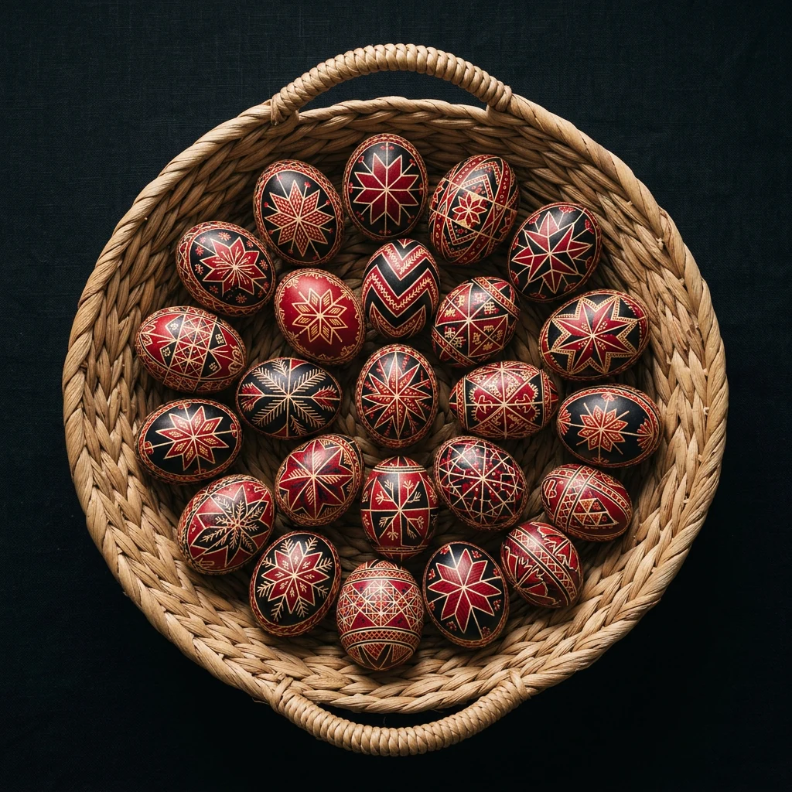
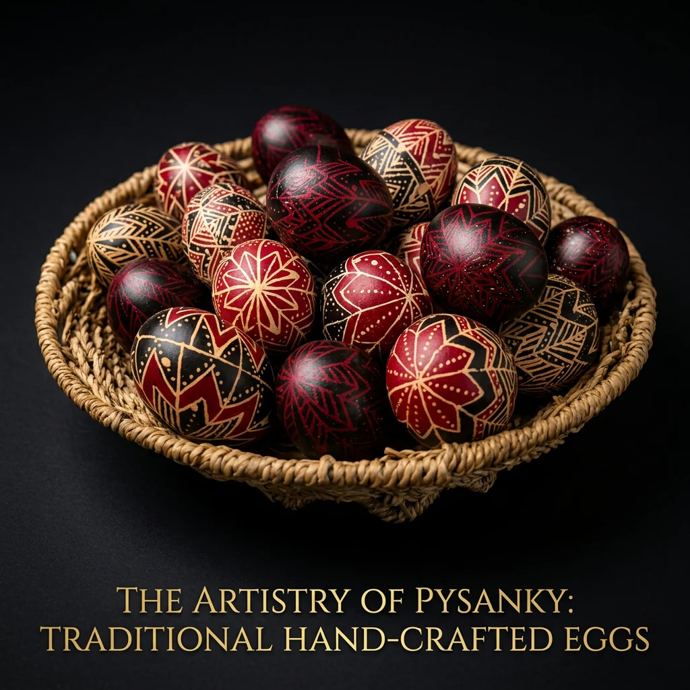
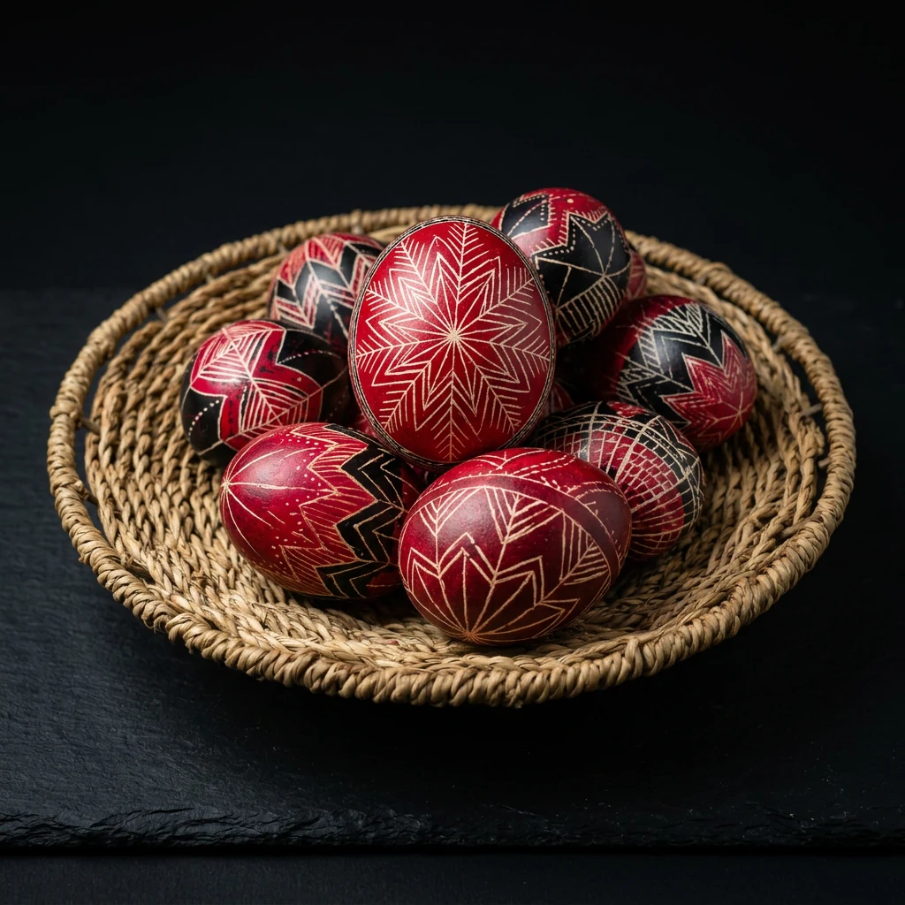
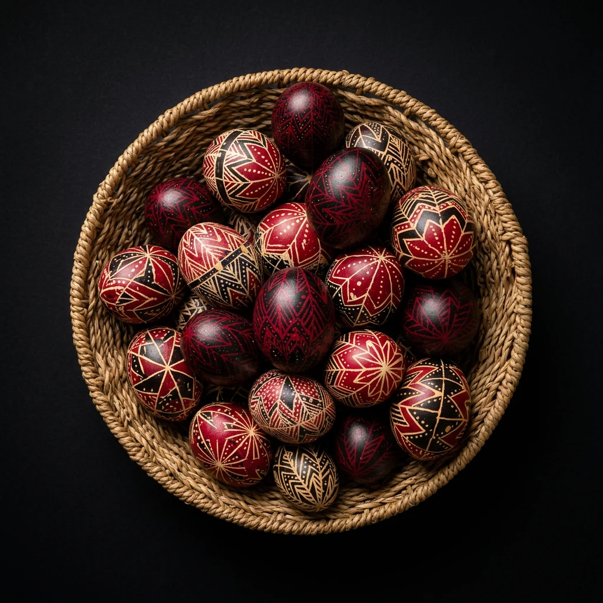

Hagyomány · Viasztechnika
Tojásírás

Egy üres felület, egy íróka és egy csepp viasz: lassan életre kel egy évszázados minta. Minden vonal döntés, minden motívum pedig nemzedékeken át továbbadott történet.
Az eredmény törékeny, mégis maradandó: egy tárgy, amely őrzi a türelmet, a figyelmet és az alkotás csendjét.
← Vissza a főoldalraVálogatás
További tojásírásos munkák



